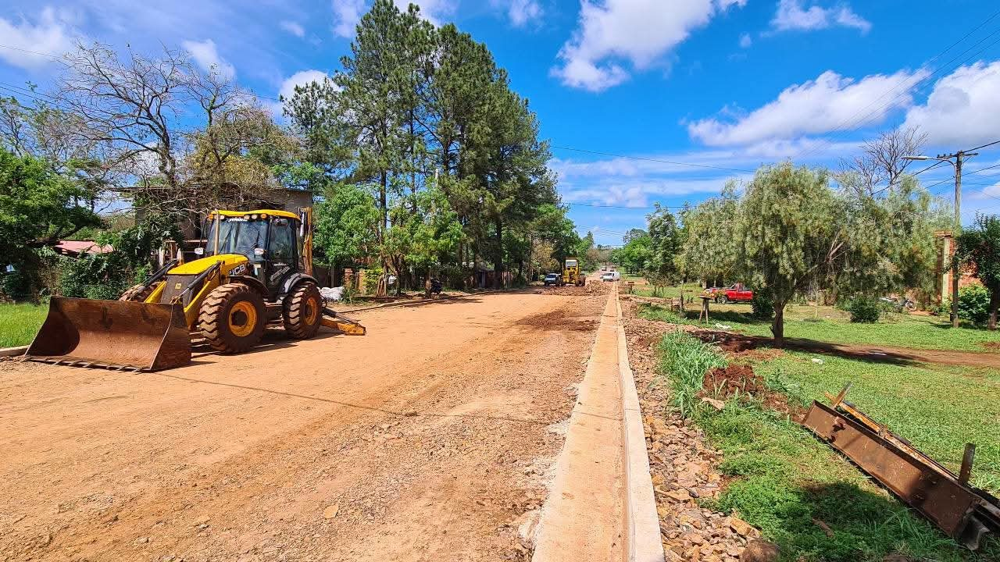
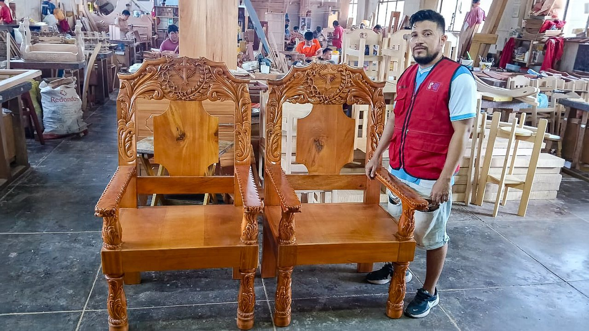
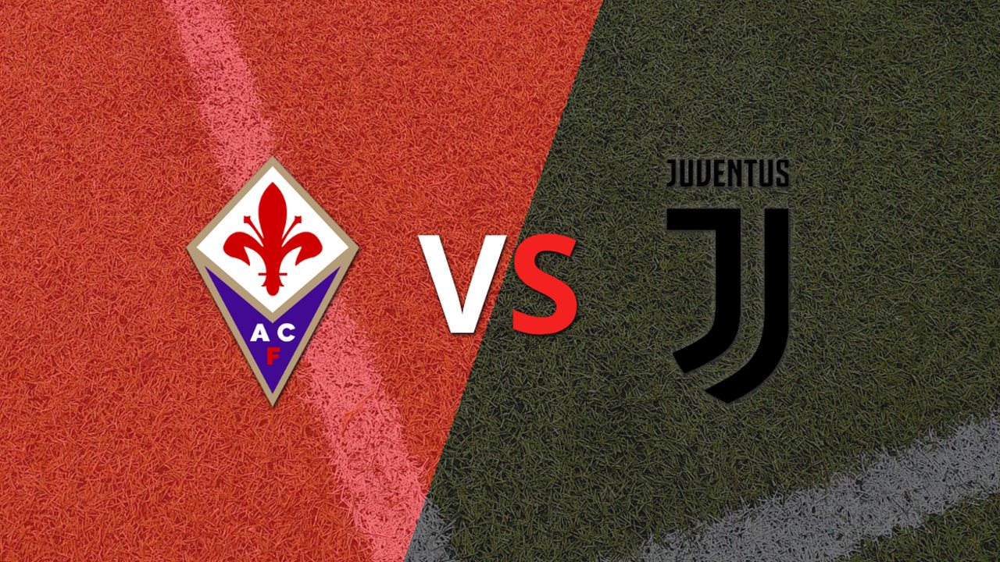
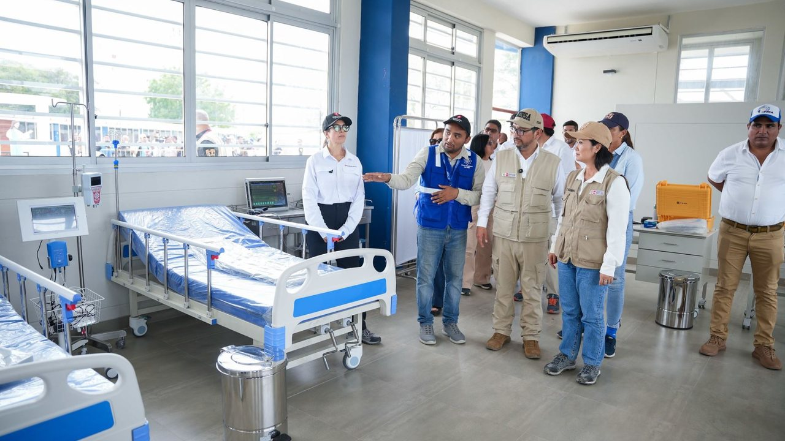
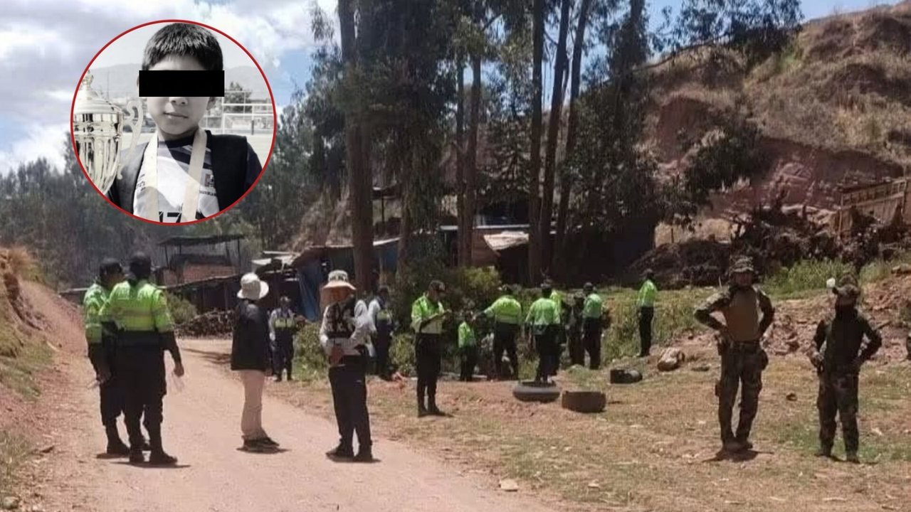
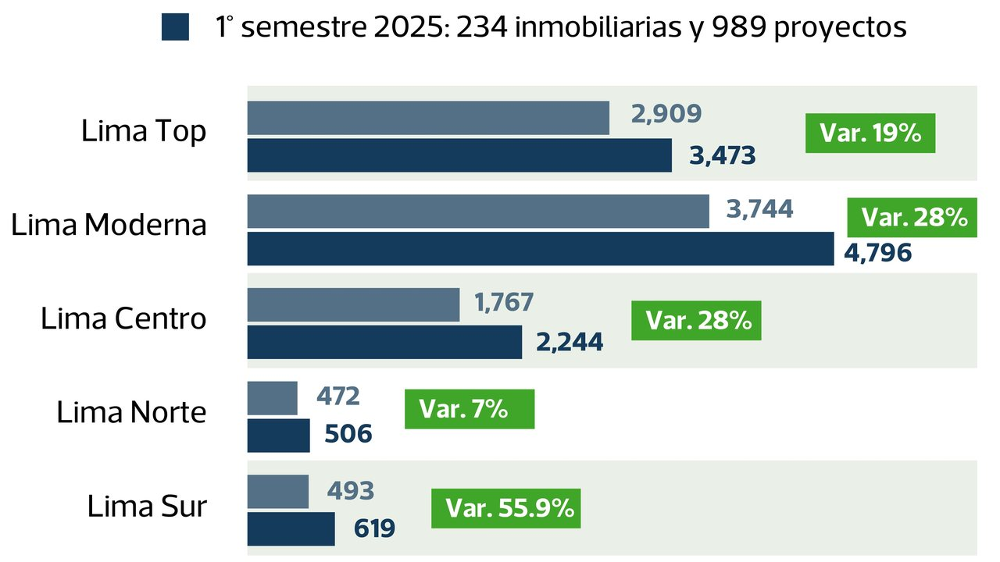

La fuerza de Mash Burnedead ya tiene rostro en el cine: Mackenyu protagonizará la película live action de MASHLE: MAGIC AND MUSCLES. Para quienes conocen al actor como Roronoa Zoro en la adaptación de ONE PIECE, el cambio de personaje lo lleva de las espadas a una fantasía donde los músculos desafían a la magia.






La fuerza de Mash Burnedead ya tiene rostro en el cine: Mackenyu protagonizará la película live action de MASHLE: MAGIC AND MUSCLES. Para quienes conocen al actor como Roronoa Zoro en la adaptación de ONE PIECE, el cambio de personaje lo lleva de las espadas a una fantasía donde los músculos desafían a la magia.
Keiko Fujimori oficializa nuevas reglas para los colegios: vuelve la nota de 0 a 20 y restringen celulares La presidenta suscribió el decreto supremo que establece nuevos lineamientos para la disciplina escolar.
Atlético de Madrid juegan por la fecha 12 de La Liga, este domingo 8 de noviembre. ADT y EN DIRECTO, por la fecha 16 del Torneo Clausura? Cruz Azul y Tigres UANL chocarán por el Torneo Apertura de la Liga MX 2026.
Coches de policía y ambulancias en la Plaza del Mercado de Cracovia, escenario del tiroteo. Este sábado ha sido escenario de u n tiroteo en el que han muerto al menos cinco personas. Más de una decena están heridas, entre ellas dos policías.
Se pide a la población que tenga en cuenta el corte de la luz eléctrica en los siguientes horarios, según el distrito de residencia.
Huancayo: estibador muere aplastado por carga de papas de más de 100 kilos y deja tres hijos en la orfandad El trabajador de 33 años sufrió un accidente mientras cargaba mercadería en el mercado mayorista.
Los indicadores señalan que el nivel de temperatura está entre 3 y 4 grados por encima de esos dos Niños, que fueron los más fuertes en los últimos 45 años. Estamos ante el escenario más adverso porque, como te decía, hoy los indicadores de El Niño son mucho mayores que los anteriores.
Un grupo de estudiantes señala a un compañero sentado en el suelo, en una recreación sobre la problemática del acoso en los colegios de Perú.
Vista Vineyards completó la plantación de más de 200 hectáreas de uva de mesa en Olmos, Lambayeque. La producción comercial está prevista para la campaña 2027 a 2028.
Cada edición dura menos de dos minutos. En la web tienes el resumen de cada historia y el enlace directo al medio original para leerla completa.
Conoce Olfatecho →